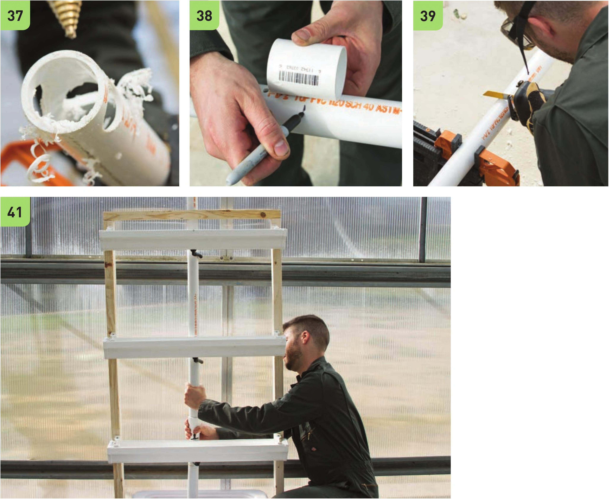

37 On the bottom end of the 1 Vi PVC pipe (the end closer to the Vi hole), drill four IW drain holes. This pipe will be resting on the bottom of the reservoir and drainage water will pass through these holes into the reservoir. Use the deburring tool to clean all edges. 38 The 1 Vi PVC couplings will be placed above the VC hole for the lower two levels and between the VC and VC hole for the top level. Make a mark 2" above the two VC holes for the lower two levels. Make a mark 2" below the VC hole for the top level. Make sure the coupling will not cover the VC holes when the coupling is put in place. 39 Cut the IV2" PVC pipe at the marks made in step 38. 40 Connect the cut PVC segments with couplings. 41 Move the assembled PVC main line back into the system with the top coming out of the guide hole in the 2 x 4" wood crossbeam. 130 DIY HYDROPONIC GARDENS
